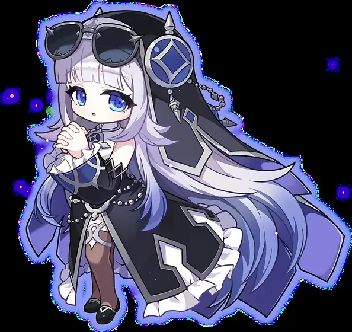
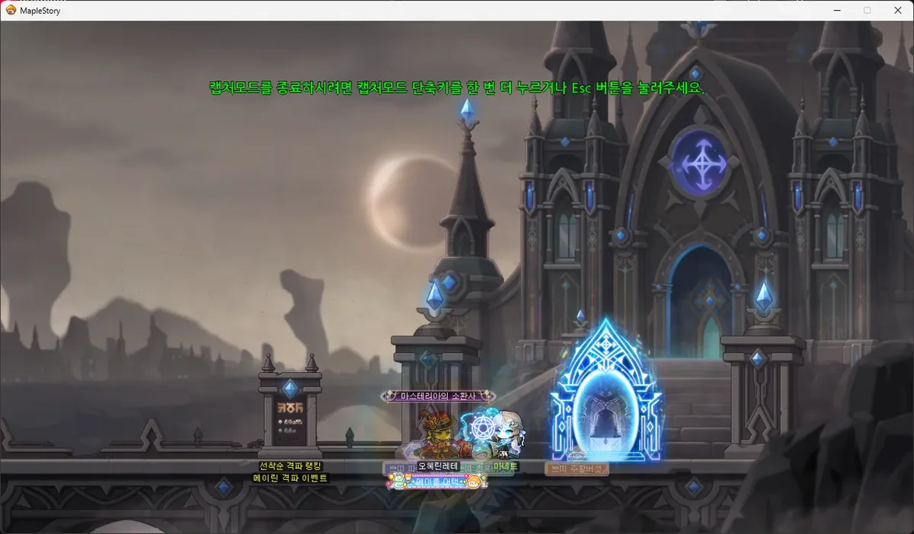
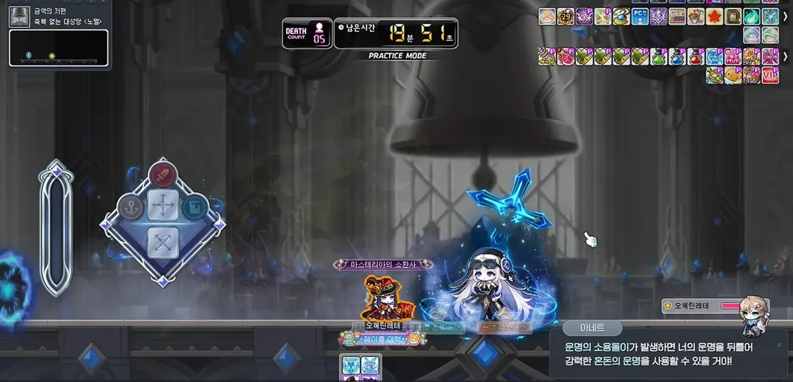
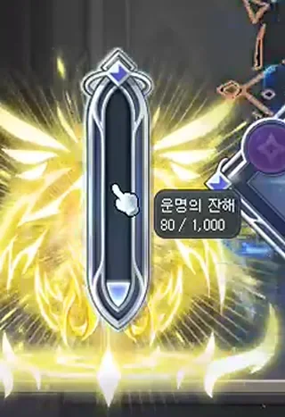
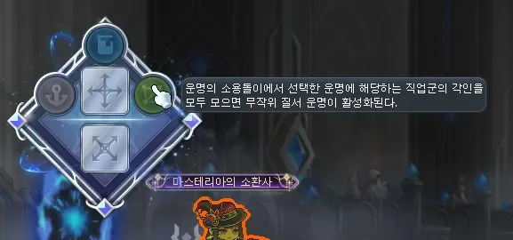
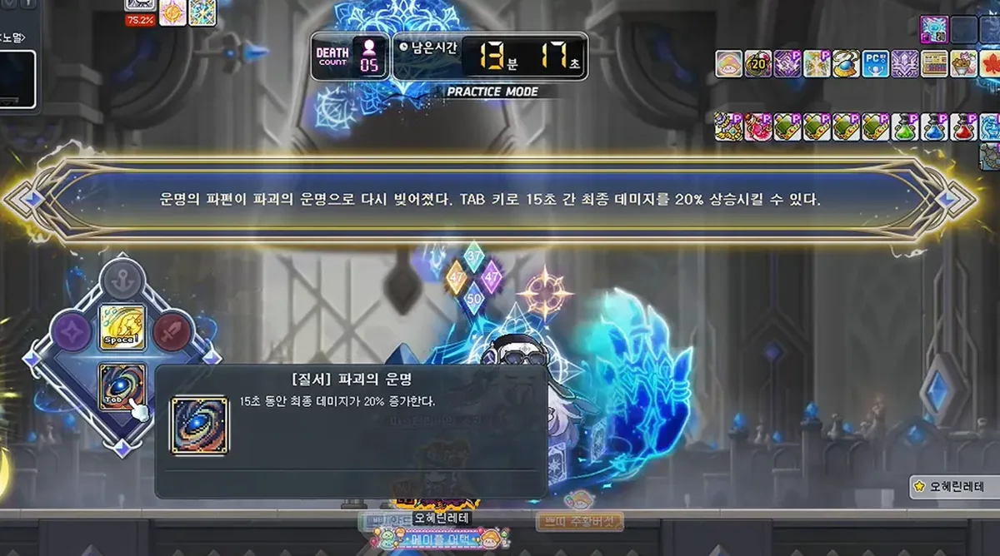
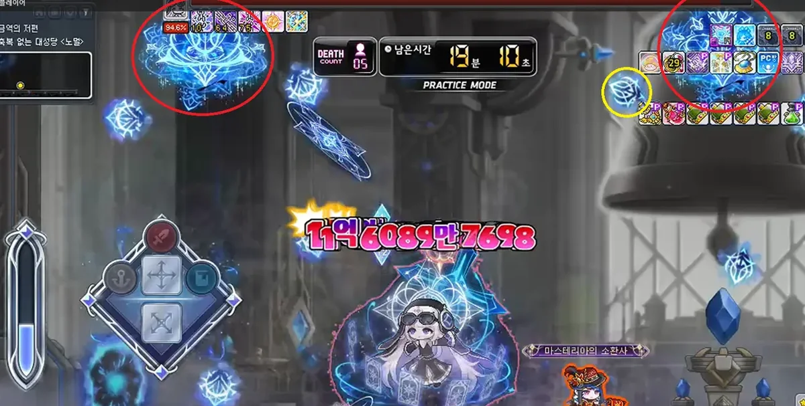
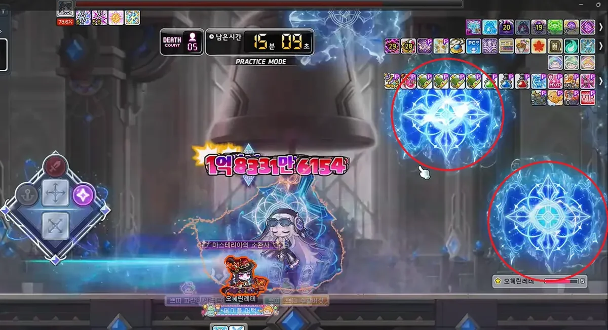

Hola muchachos. Esta es la guía de Mayrin, la boss de temporada de Challengers World. Aquí vas a encontrar las características del boss, el medidor del destino y sus habilidades, todos los patrones de la fase 1 y de la fase 2, y las recompensas, para que sepas si realmente vale la pena o no.
Los valores van en formato NormalHard: el primer número es para Normal y el segundo para Hard.
01
Características del boss
Mayrin es una boss que se pelea solo, en una sola sala y con dos fases. Es exclusiva de Challengers World, así que solo la vas a encontrar mientras dure la temporada.

Mayrin, la guía del destinoVentana de entrada del boss
Nivel mínimo270280
JugadoresSolo
Tiempo límite20 min
Death Count5
La defensa del boss (PDR) es de 380%.
El tiempo de reutilización de las pociones es de 10 segundos.
Puedes completarla 1 vez por semana, y Normal y Hard comparten ese límite.
El HP total es de 117.85 billones en Normal y 580 billones en Hard. Cada fase tiene la mitad.
Mayrin tiene una sola barra de HP. Cuando llega a 50%, se vuelve invencible, cambia el mapa y empieza la fase 2.
¿Qué tan fuerte necesitas ser?
Para que tengas una referencia:
Normal: está un poco por encima de Hard Verus Hilla y cerca de Normal Seren. Se recomiendan unos 21k de HEXA convertido.
Hard: el HP se siente entre Easy Kaling y Normal Kalos. Se recomiendan unos 46k de HEXA convertido, aunque mucha gente la mata con menos porque las habilidades de otras clases que te da el boss suben bastante tu daño.
Igual te recomiendo usar el Maple Scouter para calcular tus números.
Estos valores son de KMS y pueden variar en GMS.

Mapa de entrada
Animación de entradaMayrin en la fase 1Mayrin en la fase 2
02
Medidor del destino y habilidades
Esta es la mecánica que hace a Mayrin diferente a cualquier otro boss. Si la entiendes bien, la pelea se vuelve mucho más fácil.

Interfaz: medidor a la izquierda y emblemas de clase a su lado
Mecánica
Restos del destino (el medidor)
A la izquierda de la pantalla vas a ver un medidor que se llena solo con el tiempo.
Cada vez que superas un patrón del destino, se llena bastante más.
En Hard, cuando te golpea un ataque, el medidor baja. En Hard también se llena mucho menos al superar los patrones del destino.
Si superas un patrón del destino usando invencibilidad, no te da carga.

Medidor del destino

Emblemas de clase
Mecánica
Caos: habilidades de otras clases
Cuando el medidor se llena, aparece un altar en el centro del mapa.
Ve al altar e interactúa con él. Ahí eliges 1 de 3 habilidades de otras clases, casi siempre de 5to job, y la puedes usar una vez.
Tienes unos 10 segundos para interactuar. Si no lo haces, el altar desaparece y el medidor se reinicia.
Solo puedes tener una habilidad a la vez. Si eliges otra, pierdes la que tenías aunque esté activa. Úsala antes de volver al altar.
Eligiendo una habilidad en el altar
Todas las habilidades sirven, pero estas son las que más se recomiendan:
Evan (Zodiac Ray): la que más daño hace.
Hoyoung (Scroll: Tiger of Songyu): la segunda que más daño hace.
Phantom (Joker) y Angelic Buster (Spotlight): además del daño, te dan un buff extra.
La única que se recomienda evitar es la de Night Lord, porque te obliga a pelear muy cerca.
Mecánica
Orden: el buff especial
Arriba del medidor hay 3 emblemas de clase (guerrero, mago, arquero, ladrón o pirata).
Si en el altar eliges habilidades de esas 3 clases, completas los emblemas y ganas un buff especial al azar.
Ojo: en el altar también pueden salir clases que no están en tus emblemas. Si eliges una de esas, el emblema no se enciende.
El buff se usa con la tecla TAB, y también puedes tener solo uno a la vez.
Buff
Qué hace
Destino del fin
Inmoviliza a Mayrin 10 segundos, aunque ya sea inmune a los binds, y hace mucho daño. Es el más usado para el burst.
Destino de la destrucción
+20% de daño final durante 15 segundos.
Destino del origen
Reinicia el tiempo de tu habilidad Origin.
Destino del regreso
Reinicia los tiempos de tus habilidades de 5to job o menos. No reinicia la resistencia al bind del boss.
Destino del ascenso
Te da 1 uso más de tu habilidad Ascent. Suele ser el menos útil.

Buff de destrucción: +20% de daño finalBuff del fin: inmoviliza a Mayrin
La idea general: como los patrones del destino salen cada 55 segundos, si los superas bien vas a tener una habilidad extra de burst casi cada minuto. Aun así, si tienes suficiente daño puedes matarla sin usar nada de esto.
03
Ataques del mapa
Estos ataques salen durante toda la pelea, en las dos fases.
Mapa
Proyectiles del techo
Daño
10%15% de tu HP
Del techo salen 3 grietas que disparan proyectiles en forma de abanico, cambiando de dirección todo el tiempo.
¿Cómo lo esquivas? Fíjate dónde están las grietas y deja espacio para moverte. En Hard duelen más, así que no te quedes en su línea de disparo.

Grietas en el techo
Mapa
Distorsión en diagonal
Daño
25%40% de tu HP
Desde la esquina inferior izquierda o derecha aparecen distorsiones que avanzan en diagonal, de 3 en 3.
Explotan en el mismo orden en que aparecieron.
En Hard, si te golpean, también baja el medidor del destino.
¿Cómo lo esquivas? Mira el orden en que aparecen y muévete hacia las que ya explotaron. La de más abajo no se puede esquivar agachándote.

Distorsiones del mapa
04
Fase 1
Mayrin entra al mapa con una animación bastante larga. Le puedes pegar a partir del minuto 19:47 del contador.
“E-eres tú... ¡Ah! Eso fue un error... ¡Me voy a esforzar!”
다, 당신이군요... 앗! 이건, 실수라... 저, 힘내볼게요!
Ataques de Mayrin
Ataque de Mayrin
Ondas del ojo
Daño
30%40% de tu HP
Efecto
Stun
Mayrin cierra los ojos, flota un poco como si rezara y al bajar lanza ondas azules a los lados.
Sobre su cabeza aparece un ojo. Ese ojo te dice qué hacer.
¿Cómo lo esquivas? Si el ojo está abierto, mira hacia Mayrin. Si está cerrado, dale la espalda. Si no lo haces bien, te golpea aunque te agaches. El ataque también te golpea si estás pegado a ella.
Ojo abierto: mira hacia MayrinOjo cerrado: dale la espalda
Alcance de las ondas
Ataque de Mayrin
Manos del destino
Daño
30%40% de tu HP
Efecto
Knockback en el 2do golpe
Mayrin junta las manos y lanza una onda en forma de mano. Luego levanta los brazos y lanza una segunda onda.
¿Cómo lo esquivas? Agáchate. Los dos golpes se esquivan agachado. El primero tarda en salir y el segundo viene enseguida, así que apenas veas el movimiento, agáchate o ponte detrás de ella.
Manos del destino
Ataque de Mayrin
Espada sombría, Aquila
Daño
30%40% de tu HP
Mayrin muestra una espada sobre su cabeza y ataca 2 veces.
1er golpe: crea 3 círculos mágicos en el aire, frente a ella, y de cada uno cae una espada al suelo.
2do golpe: corta en forma de X hacia donde estabas al terminar el primer golpe.
¿Cómo lo esquivas? Pégate a Mayrin y los dos golpes no te van a tocar. También puedes quedarte entre los efectos, porque solo golpea donde se ve el ataque.
Espadas y corte en X
Ataque de Mayrin
Embestida
Daño
30%40% de tu HP
Efecto
Knockback
Mayrin reza y marca frente a ella un área dividida en dos mitades, arriba y abajo. Una es azul oscuro y la otra celeste, y cambian al azar. Luego embiste.
¿Cómo lo esquivas? Solo la parte celeste hace daño. Ponte en la azul oscuro: si está arriba, salta; si está abajo, agáchate.
Embestida en partidaAnimación de la embestida
Ataque de Mayrin
Teletransporte
Daño
25%30% de tu HP
Efecto
Knockback
Si te alejas más de 700 px de Mayrin o saltas más de 300 px de altura, se teletransporta debajo de ti y suelta una explosión.
Sale muy rápido y tiene buen alcance, así que es difícil de esquivar.
¿Cómo lo esquivas? La mejor forma es no provocarlo: pelea pegado a ella. Si igual pasa, aléjate rápido, porque el teletransporte no hace daño, solo la explosión de después.
Teletransporte y explosión
Patrones del destino
Mayrin usa uno de estos patrones cada 55 segundos. Mientras lo hace no se defiende, así que es un buen momento para pegarle. Si lo superas, el medidor del destino se llena bastante.
Patrón del destino
Zona del reposo (el círculo)
Repeticiones
3 veces5 veces
Si fallas
50%70% de tu HP + stun
Aparecen plataformas de 3 pisos en el centro y Mayrin se teletransporta al segundo piso.
Un círculo morado con una parte azul se va cerrando alrededor de ella.
La parte azul solo sale arriba a la izquierda, arriba al centro o arriba a la derecha, y se puede repetir.
¿Cómo lo esquivas? Toca la parte azul del círculo con tu personaje. Si lo atraviesas con un teletransporte, no te da carga.
Zona del reposo
Patrón del destino
Helia Concerto (espadas de fuego y hielo)
Repeticiones
5 cortes7 cortes
Si fallas
50%70% de tu HP
Mayrin va al centro, saca una espada celeste y la parte en una espada de fuego y otra de hielo.
Sobre tu cabeza aparece un símbolo de sol o luna con un número.
Con cada corte, el mapa se llena de zonas de fuego y de hielo en diagonal.
El número baja solo cuando entras en la zona correcta. Al llegar a 0, el símbolo siempre cambia.
En Hard, los cortes salen bastante más rápido.
¿Cómo lo esquivas? Entra siempre en la zona que coincide con el símbolo de tu cabeza, no con la espada que usa Mayrin. Un truco: ponte junto al pilar izquierdo más cercano a Mayrin y basta con saltar en tu sitio.
Espadas de fuego y hielo
Patrón del destino
Flecha del destino
Repeticiones
4 flechas7 flechas
Si te golpea
50%70% de tu HP
Mayrin va al centro y en el cielo aparece un espíritu morado con una línea de aviso que te apunta.
La línea se llena, se detiene y luego sale una flecha.
Las flechas salen de puntos que van de un extremo del mapa al otro. En Hard, al llegar al extremo, vuelven.
¿Cómo lo esquivas? La idea es que la flecha atraviese al espíritu. Como los espíritus están alrededor del centro, lleva la flecha hacia donde está Mayrin. Con un dash o un teletransporte en el momento justo es bastante fácil.
Flechas del destino
Patrón del destino
Cartas de la verdad y la mentira
Mezclas
4 veces6 veces
Si fallas
80%Muerte
Mayrin voltea una carta con un dibujo de día y noche dividido a la mitad. Esa es la carta verdadera.
Luego la vuelve a voltear y mezcla todas las cartas.
Al final, la verdadera brilla en amarillo y es la zona segura. Las demás se convierten en espadas que golpean desde el suelo hasta el techo.
¿Cómo lo esquivas? No le quites la vista a la carta verdadera desde que la muestra y ponte debajo de ella al final. En Hard, fallar es muerte directa, así que concéntrate solo en esa carta.
Cartas de la verdad y la mentira
Recomendaciones para la fase 1
Pelea siempre pegado a Mayrin. Así esquivas la espada Aquila y evitas el teletransporte.
Aprende bien el ojo: abierto, la miras; cerrado, le das la espalda.
En la embestida, busca siempre la mitad azul oscuro.
Los patrones del destino son tu prioridad, porque son los que te dan las habilidades extra.
05
Fase 2
Cuando Mayrin llega a 50%, anula el daño que sobre, se quita todos los debuffs (incluidos los binds) y se transforma. Cambia el mapa y también su personalidad: pasa de tímida a agresiva. No gastes tu burst justo al llegar a 50%, porque ese daño se pierde.
“¿Rechazas... el destino...? Entonces... ¡te voy a aplastar ahora mismo!”
운명을... 거부하시는 건가요...? 그렇다면... 지금 바로 짓밟아줄게...!
Ataques de Mayrin
Son los mismos ataques de la fase 1, con algunos golpes extra.
Ataque de Mayrin
Ondas del ojo (x2)
Daño
30%40% de tu HP
Efecto
Stun
Hace el ataque del ojo 2 veces seguidas. El ojo siempre sale una vez abierto y una vez cerrado, en cualquier orden.
¿Cómo lo esquivas? Apenas pase el primero, prepárate para hacer lo contrario en el segundo.
Ondas del ojo en la fase 2
Ataque de Mayrin
Manos del destino + círculo que te persigue
1er y 2do golpe
30%40% de tu HP
3er golpe
50%55% de tu HP
Después de las dos ondas, lanza un círculo mágico que te persigue, arriba o abajo de tu personaje.
A los 3 segundos el círculo se queda quieto y sale una mano que golpea ese lugar.
Si el golpe viene de arriba, te deja en stun. Si viene de abajo, te lanza al aire.
Es el ataque más complicado de la pelea.
¿Cómo lo esquivas? Agáchate en las dos primeras ondas, y en cuanto el círculo se quede quieto, muévete hacia un lado.
Manos y círculo que te persigue
Ataque de Mayrin
Espada sombría, Aquila + lanza del suelo
1er y 2do golpe
30%40% de tu HP
3er golpe
50%55% de tu HP + airborne
Después de las espadas y la X, aparece un círculo mágico en el suelo frente a ella y sale una lanza hacia donde estabas.
¿Cómo lo esquivas? Igual que en la fase 1: pégate a Mayrin. Si esquivaste entre los efectos, revisa enseguida dónde va a salir la lanza.
Espadas y lanza del suelo
Ataque de Mayrin
Embestida
Daño
30%40% de tu HP
Efecto
Knockback
Es igual que en la fase 1.
¿Cómo lo esquivas? Ponte en la mitad azul oscuro.
Ataque de Mayrin
Teletransporte (x2)
Daño
40%50% de tu HP
Efecto
Knockback
Se activa igual que en la fase 1, pero ahora suelta 2 explosiones y cada una hace daño.
¿Cómo lo esquivas? Sigue pegado a ella. Si se teletransporta, aléjate y revisa tu posición después de la primera explosión.
Teletransporte con dos explosiones
Patrones del destino
Siguen saliendo los 4 patrones de la fase 1 y se agregan 2 más.
Patrón del destino
Tormenta devoradora
Si fallas
80%Muerte
Aparece un mensaje que dice si la tormenta viene por la izquierda o por la derecha, y en el mapa se crea una zona dorada.
A los 3 segundos llega la tormenta y te empuja. Medio segundo después, unas espadas cruzadas caen sobre todo el mapa.
Si estás dentro de la zona dorada, se convierte en un escudo que te protege.
¿Cómo lo esquivas? Ponte del lado correcto para que la tormenta te empuje dentro de la zona dorada. Si se te hace muy difícil, quédate dentro de la zona y usa tu Ascent o una habilidad de invencibilidad para que no te mueva. Si no viste el mensaje, mira el láser azul del techo: se mueve en la dirección del viento, y si tiene un remolino morado, el empuje es fuerte.
Tormenta y zona dorada
Patrón del destino
Espadas del alma
Repeticiones
3 destellos5 destellos
Si te golpea
50%70% de tu HP
Mayrin crea 3 espadas arriba: a la izquierda, al centro y a la derecha. Sobre tu cabeza aparece un emblema de protección.
Las espadas brillan varias veces. Luego atacan el suelo en ese mismo orden y sueltan ondas de choque muy amplias.
Una misma espada puede atacar más de una vez. Si una onda te golpea, pierdes el emblema y fallas el patrón.
¿Cómo lo esquivas? Recuerda el orden en que brillan y ponte lejos de cada espada cuando le toca. Es el patrón más injusto de Mayrin, porque las ondas cubren casi todo el mapa, así que se recomienda usar tu Ascent o una invencibilidad aquí. En Normal te alcanza con una invencibilidad. En Hard necesitas más tiempo de invencibilidad o hacer bien el patrón.
Espadas del alma
Recomendaciones para la fase 2
El ataque más peligroso es el de las manos con el círculo: cuando el círculo se quede quieto, sal de ahí.
Guarda tu Ascent o alguna invencibilidad para las Espadas del alma.
En la tormenta, no te resistas: deja que el viento te lleve a la zona dorada.
Si ya dominas la fase 1, la fase 2 no debería costarte mucho, porque es casi lo mismo con golpes extra.
06
Recompensas
Al derrotarla, Mayrin desaparece en un portal de cartas. Para recibir las recompensas tienes que entrar al mapa de recompensas y romper el objeto sagrado prohibido, que tiene 100,000 de HP.
“No puede ser... ¡Este destino no lo vi venir...!”
이럴 수는... 이런 운명은 보이지 않았는데...!!
Objeto sagrado del mapa de recompensas
Recompensa
Normal
Hard
Bolsas de mesos dorados
30
60
Energía de Sol Erda
400
550
Caja de fragmentos de Sol Erda
Básica
Avanzada
Caja de accesorios Pitch Black de Mayrin
Sí
Sí
Cajas de armadura Eternal (2 tipos)
No
Sí
Fragmento del destino cambiante
No
2
Vales de pergaminos premium (accesorio, equipo de mascota, arma)
No
Sí
Primera vez que la derrotas
Cupones de cara, pelo y ropa de la guía del destino
Anillo de etiqueta y burbuja de chat, y caja de alma de Mayrin
Las cajas tienen 7 días de duración y no se pueden intercambiar. Los nombres y cantidades son de KMS.
¿Vale la pena?
Si estás en Challengers World, sí. Normal ya te da accesorios Pitch Black y fragmentos de Sol Erda, y es necesaria para varias misiones de la temporada. Pero si puedes con Hard, ahí está lo mejor: el doble de mesos, fragmentos avanzados y las cajas de armadura Eternal.
Con esto ya tienes todo lo que necesitas para pelear contra Mayrin. Mucha suerte en tus runs y ojalá te toquen los mejores drops.
07
Créditos
Esta guía está basada en guías de la comunidad coreana. Créditos y saludos a sus autores. Las imágenes y los videos son de esas guías y las voy a reemplazar por grabaciones propias.